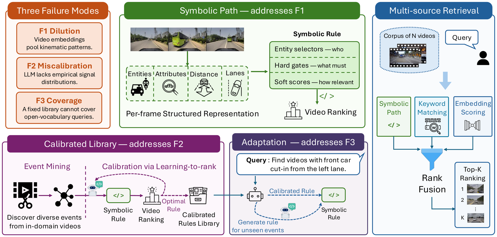
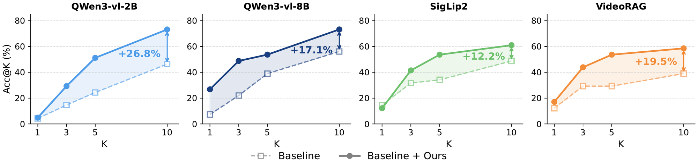

Abstract
Video retrieval at scale is central to data curation and safety validation in autonomous driving, where users want to find not only scenes but also dynamic events such as cut-ins and hard braking. Existing vision-language and keyword-based retrieval methods often miss these events because the relevant motion may not be explicitly described in text or captured by lexical overlap. Rule-based retrieval can encode such events more directly, but it is brittle: generated or hand-written rules often fail when their assumptions do not match real driving data. We propose STRIVE-D, a data-calibrated retrieval framework for driving videos. It uses weakly labeled in-domain videos to estimate when a query rule is reliable, adapt rules that mismatch observed data, and fuse calibrated rule scores with vision-language and keyword-based retrieval signals. Across three driving benchmarks, including newly released human-annotated event data on DrivingDojo, STRIVE-D delivers up to 84% relative improvement in top-1 accuracy over state-of-the-art methods.
Contributions
- We characterize three failure modes of driving video retrieval: dilution, miscalibration, and coverage gaps.
- Numerical-constraint calibration via learning-to-rank under distant supervision.
- A confidence-aware adaptation policy for out-of-library queries.
- Evaluation on DrivingDojo, CarCrashDataset, and MM-AU, with a release of human-annotated event queries on DrivingDojo.
Method

Results
Benchmark comparison
| Type | Method | MRR | mAP | Acc@1 | Acc@3 | Acc@5 | Acc@10 |
|---|---|---|---|---|---|---|---|
| Embedding | Qwen3-VL-2B | 12.2 | 1.4 | 4.9 | 26.8 | 46.3 | 65.9 |
| Embedding | Qwen3-VL-8B | 20.1 | 2.2 | 14.6 | 31.7 | 51.2 | 68.3 |
| Embedding | SigLIP | 23.7 | 4.7 | 14.6 | 22.0 | 31.7 | 58.5 |
| Embedding | SigLIP2 | 25.0 | 1.9 | 14.6 | 31.7 | 34.2 | 48.8 |
| RAG | VideoRAG | 21.6 | 3.5 | 12.2 | 29.3 | 29.3 | 39.0 |
| Neuro-symbolic | NSVS-TL | 31.8 | 4.9 | 22.0 | 34.2 | 43.9 | 53.7 |
| Neuro-symbolic | STRIVE-D (Ours) | 38.7 | 8.6 | 26.8 | 48.8 | 53.7 | 73.2 |
| Type | Method | MRR | mAP | Acc@1 | Acc@3 | Acc@5 | Acc@10 |
|---|---|---|---|---|---|---|---|
| Embedding | Qwen3-VL-2B | 26.9 | 6.0 | 18.4 | 30.6 | 42.9 | 49.0 |
| Embedding | Qwen3-VL-8B | 32.7 | 6.3 | 20.4 | 38.8 | 55.1 | 61.2 |
| Embedding | SigLIP | 16.1 | 4.3 | 6.1 | 24.5 | 30.6 | 38.8 |
| Embedding | SigLIP2 | 17.8 | 6.1 | 8.2 | 22.5 | 26.5 | 40.8 |
| RAG | VideoRAG | 22.9 | 6.0 | 18.4 | 24.5 | 24.5 | 36.7 |
| Neuro-symbolic | NSVS-TL | 18.0 | 2.8 | 6.1 | 20.4 | 36.7 | 53.1 |
| Neuro-symbolic | STRIVE-D (Ours) | 40.5 | 9.5 | 26.5 | 53.1 | 59.2 | 65.3 |
| Type | Method | MRR | mAP | Acc@1 | Acc@3 | Acc@5 | Acc@10 |
|---|---|---|---|---|---|---|---|
| Embedding | Qwen3-VL-2B | 38.3 | 32.1 | 26.7 | 44.4 | 55.6 | 64.4 |
| Embedding | Qwen3-VL-8B | 40.1 | 33.5 | 28.9 | 46.7 | 62.2 | 66.7 |
| Embedding | SigLIP | 30.0 | 22.0 | 17.8 | 35.6 | 51.1 | 60.0 |
| Embedding | SigLIP2 | 28.9 | 23.4 | 15.6 | 33.3 | 51.1 | 62.2 |
| RAG | VideoRAG | 32.1 | 25.6 | 20.0 | 40.0 | 46.7 | 55.6 |
| Neuro-symbolic | NSVS-TL | 23.1 | 19.3 | 11.1 | 24.4 | 37.8 | 53.3 |
| Neuro-symbolic | STRIVE-D (Ours) | 45.0 | 37.7 | 28.9 | 60.0 | 73.3 | 75.6 |
Retrieval performance (%) on three driving benchmarks, all methods evaluated with a reranking pool size of 20. Bold: best; underline: second-best.
Plug-in generalizability

Qualitative examples
Authors
BibTeX
@inproceedings{yao2026strive,
author = {Manyi Yao and Sparsh Garg and Christian R. Shelton and Amit Roy-Chowdhury and Abhishek Aich},
title = {Driving Video Retrieval for Complex Queries with Structured Grounding},
booktitle = {Advances in Neural Information Processing Systems},
booktitleabbr = {NeurIPS},
year = 2026,
volume = 39,
note = {to appear}
}